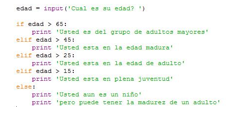
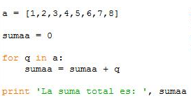
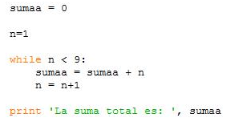

Instrucciones y comando de control en programación
- Jaime A. Valencia V.
- Facultad de Ingeniería
- Universidad de Antioquia
Iniciamos presentando los comandos básicos que se utilizan en la programación secuencial y que cada lenguaje de programación tiene su forma particular o palabra clave para describir esta acción. Los siguientes son los grupos de instrucciones que discutiremos:
- Asignación (aritmética, lógica, variable, constante).
- Decisión lógica: (funcionamiento y ejemplos. (if))
- Ciclos: (do , while, Rompimientos)
La asignación es la manera de dar un nombre a una información determinada en el ambiente de programación. La Imagen (GALEANO, 2011o) muestra cómo se simboliza en cada uno de los métodos de descripción de algoritmos. El significado en palabras de esta instrucción es que el valor o dato 5 lo guarde en alguna posición de memoria del ordenador y lo pueda recordar nombrando la letra A. Este dato o información podrá ser usado posteriormente para realizar alguna operación, también puede ser reemplazado por otro dato.

En lenguaje de programación PYTHON (Python, 2011b), el símbolo igual "=" se utiliza para codificar la instrucción de asignación:
En esta instrucción PYTHON hace distinción entre las letras mayúsculas y minúsculas para nombrar una información. El nombre que está a la izquierda del signo igual puede tener más letras o números, pero no se debe utilizar palabras que el lenguaje tiene reservadas para otras instrucciones. Lo que está a la derecha del signo igual es la información que será guardada y puede ser de diferentes tipos.
El lenguaje PYTHON puede usarse con un interfaces de usuario para trabajar como intérprete de manera interactiva o se pueden escribir las instrucciones en un archivo de texto sin formato; en este documento haremos la distinción así:
- >>> A = 5 (cuando estamos usando el interface de usuario)
- A = 5 (cuando estamos escribiendo el programa en el editor)
Una característica importante del PYTHON es que no es necesario describir con anterioridad el tipo de información que se guarda, ya que PYTHON automáticamente reconoce su tipo y lo guarda con esa característica. Veamos los siguientes ejemplos con diferentes tipos de datos:
La información 5 se guarda en a como un dato de tipo numérico entero ( en PYTHON es “int”).
La información 1.2 se guarda en b como un dato numérico real o de punto flotante (en PYTHON es “float”).
La información 'casa' se guarda en c como un dato de tipo alfabético ( en PYTHON es “str” ).
La información True se guarda en d como un dato de tipo lógico o Booleano ( en PYTHON es “bool”).
La información 2 + 3j se guarda en d como un dato de tipo numérico complejo (en PYTHON es “complex”).
Con los datos de tipo numérico podemos realizar las diferentes operaciones matemáticas. Veamos los siguientes ejemplos para mostrar las operaciones básicas y asignación de resultados o cálculos con esta operaciones:
- >>>n1 = 3
- >>>n2 = 4
- >>>n3 = n1 + n2
n1 y n2 son datos de tipo entero y n3 es el resultado 7 de la suma que es un dato de tipo entero.
n4 es el resultado -1 de la resta y es un dato de tipo entero.
n5 es 12 como resultado del producto de n1 y n2. Es un dato de tipo entero
Con la operación de división se debe poner especial cuidado, ya que la división de dos números enteros no necesariamente es otro número entero. Esta operación describe un nuevo conjunto de números denominados racionales, que contiene los números enteros y a su vez, es un subconjunto de los números reales. Veamos el siguiente ejemplo de asignación:
a n6 se le asigna el valor entero 0 como resultado de la división del número entero 3 y el número entero 4.
A n7 se le asigna el valor 0.75 como resultado de la división del número real 3.0 y el 4.0. Este dato es del tipo “float”.
Se puede argumentar que ambos resultados son igualmente correctos, ya que n6 es el número entero de la división y n7 es el resultado en otro conjunto de números. Este ejemplo nos muestra lo importante de definir el tipo de datos que se quiere procesar en el ordenador.
La decisión lógica permite programar en el computador actividades o instrucciones que requieren tomar una decisión según una evaluación de una expresión lógica. De estas instrucciones de decisión presentaremos las siguientes 3 formas:
- Decisión simple
- Decisión Doble
- Decisión Múltiple

En los diagramas de flujo, el rombo será la convención para el planteamiento de preguntas o evaluación de expresiones lógicas. Como se describe en la Imagen (GALEANO, 2011p), el ordenador verifica una condición o evalúa una expresión lógica para realizar una actividad o secuencia de actividades. Estas actividades se realizan sólo si el resultado es verdadero de lo contrario no realiza ninguna acción.
En el lenguaje PYTHON la codificación de esta instrucción usa como palabra clave IF y los dos puntos ":" después de la expresión lógica que se va a evaluar. Luego se escribe la secuencia de instrucciones que se va a realizar. Veamos dos ejemplos de la codificación en PYTHON usando el interface de usuario:
>>> if 1 < 5: print 'Esto es cierto'La respuesta de esta línea será que en pantalla aparecerá 'Esto es cierto', ya que la instrucción print de PYTHON realiza la acción de presentar por pantalla, que es un elemento de salida de información, lo que está entre comillas. La expresión que se evalúa es si 1 es menor que 5, lo cual es verdadero y el ordenador ejecuta las instrucciones.
>>>a = True
>>>if a:
print 'a es verdadero'
>>>a=1
>>>if a:
print'a puede ser también 1'
a puede ser tambien 1
en este ejemplo a es un valor verdadero, por tanto lo que está escrito después de print aparecerá en pantalla. Aquí se muestra un aspecto fundamental en la escritura de códigos en PYTHON, es la indentación, , es decir, los espacios que se deben dejar en la línea siguiente de la instrucción IF. El bloque de código no se cierra con ninguna palabra clave, como se presenta en otros lenguajes, sólo con terminar la indotación.

En el caso de Decisión doble se puede definir dos bloques de instrucciones que serán ejecutados según la evaluación de la expresión lógica. Como lo muestra la Imagen (GALEANO, 2011q), si la expresión lógica es verdadera, se ejecutan las instrucciones del bloque verdadero, y si la expresión lógica es falsa, se ejecutan las instrucciones del bloque falso. En este caso siempre habrá un conjunto de instrucciones que se ejecutará.
En lenguaje PYTHON esta doble decisión utiliza las palabra clave IF y ELSE para su codificación. Veamos los dos ejemplos siguientes usando el interface de usuario (python shell):
>>>B = False
>>>if B: print 'B es considerado verdadero'
else: print 'B es considerado falso'
La respuesta de este código es que se imprimirá la frase 'B es considerado falso' porque la condición o expresión lógica B es evaluada como falsa.
>>>B = True
>>>if B: print 'B es considerado verdadero'
else: print 'B es considerado falso'
En este caso se imprime 'B es considerado verdadero'.

Para la Decisión múltiple se utiliza una secuencia de decisiones como se muestra en la Imagen (GALEANO, 2011r). Para cada decisión se tendrá una expresión lógica para evaluar y se hará la evaluación siguiente en el caso de resultar la anterior falsa. En lenguaje PYTHON la implementación de esta decisión múltiple se hace con las palabras clave IF, ELIF y ELSE. Veamos el siguiente ejemplo de codificando en PYTHON utilizando el editor:

En este programa escrito en PYTHON se utiliza el comando input() para habilitar el teclado y que el usuario ingrese su edad, luego con un bloque de decisión múltiple se clasifica el grupo de edad al que pertenece el usuario. Los grupos de edad contemplados son los mayores de 65 años, los que están entre 45 y 65 años, los que están entre 25 y 45, los que están entre 15 y 25, y por último los menores de 15 años. Observe que las preguntas en los ELIF consecutivos solo se realizaran si todas las anteriores han sido falsas. Al encontrar una de las expresiones lógicas verdadera, se ejecuta la instrucción respectiva y termina el bloque de decisión múltiple. Las instrucciones después del ELSE sólo se ejecutarán cuando todo lo anterior ha sido falso.
Los Ciclos son procedimientos o comandos de programación que permiten repetir de manera controlada un conjunto de instrucciones. Para su presentación clasificaremos los ciclos según su modo de control en los siguientes casos:
- Ciclo controlado por variable de conteo (for)
- Ciclo controlado por una condición (while)

Los Ciclos controlados por variable sson estructuras básicas de programación que realizan una repetición tantas veces como la variable de control lo permita. Algunos lenguajes de programación incluyen la variable de control y su evolución en las palabras claves, otros sólo incluyen la variable de control.
En PYTHON la variable de control está incluida junto con la palabra clave FOR y la forma cómo debe hacer el conteo o repetir el procedimiento depende de otra variable que define el usuario. Veamos el siguiente ejemplo de código en PYTHON:

El objetivo de este programa es calcular la suma de los números del 1 al 8. En este código, la primera línea de asignación guarda el conjunto de números enteros del 1 al 8 en a, los cuales serán usados como datos para el control del ciclo. La siguiente línea de asignación inicia la variable sumaa en cero y ésta será la variable que se usará para calcular la suma de los números del 1 al 8. La línea siguiente es la codificación del ciclo con las palabras claves FOR, IN, y la variable de control del ciclo q. La variable a en esta línea indica dónde están los datos que uno a uno irá tomando la variable de control y ejecutará la línea de asignación de la variable sumaa, hasta recorrer todos los datos de a.
Terminado el ciclo se continúa con la línea de print para mostrar el resultado de la suma que está ya acumulado en la variable sumaa.
La variable q del ciclo de control asume en cada ciclo un solo valor de los que están en la variable a, hasta recorrerlos todos. Esta variable q puede tener cualquier nombre y puede accederse a su información, como en el caso de este ejemplo donde el dato que se tiene en cada ciclo se suma a la variable sumaa. La variable a es en PYTHON de tipo 'list' que lo podemos traducir como lista y nos permite guardar de forma ordenada un conjunto de datos de diferente tipo; para este ejemplo fueron valores enteros.
Este ciclo permite como alternativa usar la palabra ELSE para realizar un bloque de instrucciones al terminar la variable de conteo.

El Ciclo controlado por condición realiza la ejecución de un mismo bloque de instrucciones tantas veces como lo permita una expresión lógica que se evalúa en cada ciclo. Cuando el resultado de la evaluación de la expresión lógica es VERDADERO, el ciclo se repite ejecutando el bloque de instrucciones programadas; en caso contrario se termina el ciclo y continúa con el programa.
En PYTHON la palabra clave es WHILE seguida de una expresión lógica que se evaluará en cada ciclo. El bloque de instrucciones siguiente sólo se ejecutará si la evaluación de la expresión lógica es VERDADERA ( (o en inglés TRUE). Veamos el siguiente programa que tiene como objetivo calcular la suma de los números del 1 al 8, como en el ejemplo anterior, pero en este caso usando un ciclo controlado por condición:

En este código las dos primeras líneas inicializan las variables sumaa donde se acumulará el resultado y n que incrementaremos en cada ciclo. La línea siguiente inicia el bloque con la palabra WHILE y la expresión lógica n<9 que se evalúa cada vez que se ejecuten todas las instrucciones del bloque. La indentación o los espacios que se dejan al inicio después de la línea de WHILE están definiendo el bloque de instrucciones que se va a ejecutar en cada ciclo; en este caso una instrucción acumula la suma en la variable sumaa y la otra instrucción incrementa la variable n. Al salir del ciclo se escribe en pantalla el valor de la variable sumaa donde se ha acumulado la suma de los números del 1 al 8.
Este ciclo no tiene un contador, puede repetir la ejecución tantas veces como lo permita la evaluación de la condición. También tiene como alternativa el uso de la palabra clave ELSE para definir un bloque de instrucciones a ejecutar cuando la evaluación de la condición en FALSA y termina el ciclo.
De estas estructuras básicas de programación existen variantes que se discutirán en otros capítulos posteriores.